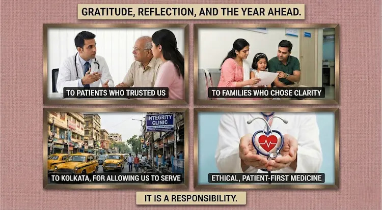
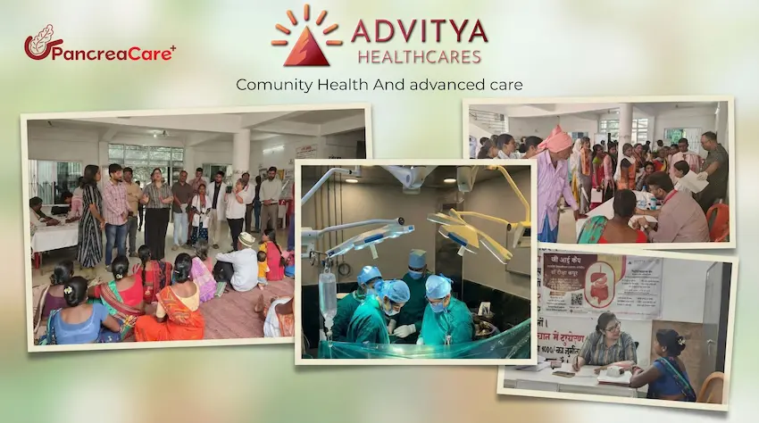

As the year draws to a close, Kolkata enters one of its most thoughtful seasons. Christmas lights brighten Park Street, the air feels lighter, and the New Year quietly invites reflection.
Christmas lights brighten Park Street, the air feels lighter, and the New Year quietly invites reflection.
It is a time when the city pauses — not just to celebrate, but to look inward.
At Advitya Healthcares by PancreaCare, this season holds special meaning. It reminds us that healthcare, much like life, is not about urgency alone — it is about continuity, trust, and timely care.
The Festive Pause Kolkata Rarely Takes
Kolkata is a city that works hard, thinks deeply, and often delays itself.
Throughout the year, people push health concerns aside:
- Digestive discomfort that becomes routine
- Fatigue explained away as stress
- Symptoms postponed with “let the year end first”
The festive season offers a rare pause — a moment when families sit together, conversations slow down, and health concerns finally surface.
This pause matters.
Because many serious gastrointestinal and pancreatic conditions do not begin suddenly — they begin quietly.
Why the End of the Year Is Often the Beginning of Awareness
In clinical practice, one pattern is consistent:
patients often seek clarity at the turn of the year.
Not because symptoms are new — but because the silence around them has ended.
Digestive health, liver function, pancreatic balance — these systems respond slowly to neglect and powerfully to early care. When addressed on time, outcomes change dramatically.
The New Year, therefore, is not just a calendar change.
It is a medical opportunity.
Pancreatic & Digestive Health: The Quiet Core of Well-Being
The pancreas is one of the most misunderstood organs in the body.
It works silently — regulating digestion, metabolism, and blood sugar — until imbalance demands attention.
Conditions related to the pancreas and digestive system often present as:
- Recurrent acidity or bloating
- Unexplained weight changes
- Digestive fatigue
- New-onset diabetes after 40
- Pain that comes and goes
These are not inconveniences. They are early conversations the body is trying to have.
At PancreaCare, we believe that listening early prevents escalation later.
A Kolkata-Centric Approach to Advanced Care
Healthcare must respect context.
Kolkata’s lifestyle — long commutes, late meals, work stress, seasonal changes — plays a decisive role in digestive and pancreatic health.
Our approach at Advitya Healthcares by PancreaCare is built on:
- Understanding lifestyle before diagnosis
- Precision evaluation rather than blanket treatment
- Clear communication without fear
- Ethical decisions that prioritise long-term outcomes
Advanced care should never feel distant or overwhelming.
It should feel thoughtful, local, and humane.
The True Meaning of Care During Festive Seasons
Festivals remind us of responsibility — to family, to time, to ourselves.
True care is not reactive. It is prepared.
Choosing to understand symptoms, seeking clarity instead of postponement, and valuing early evaluation are acts of responsibility — not anxiety.
This festive season, care is not about doing more.
It is about doing what matters, at the right time.
Gratitude, Reflection, and the Year Ahead
As Christmas passes and the New Year approaches, we express gratitude:
- To patients who trusted us with difficult questions
- To families who chose clarity over delay
- To Kolkata, for allowing us to serve with integrity

Every consultation reinforces our belief that ethical, patient-first medicine is not a trend — it is a responsibility.
Looking Forward: Care That Continues Into the New Year
The coming year will bring progress, innovation, and new challenges.
But one principle will remain unchanged:
Healthcare must always place understanding before intervention.
At Advitya Healthcares by PancreaCare, we remain committed to delivering advanced digestive and pancreatic care that is grounded in trust, early action, and respect for every individual’s journey.
Advitya Healthcares by PancreaCare, Kolkata
Specialised care for digestive, liver, gallbladder, and pancreatic health —
designed around early diagnosis, ethical practice, and long-term well-being.

📍 Kolkata Consultations
🌐 Website: https://advityahealthcares.com
✨ This Christmas and New Year, may health be quiet, care be timely, and the year ahead be guided by clarity. ✨
Warm wishes from Advitya Healthcares by PancreaCare.
Have a question this article does not answer?
Send us your reports. A specialist reviews them before you travel, so the first visit begins with a plan rather than a repeat test.